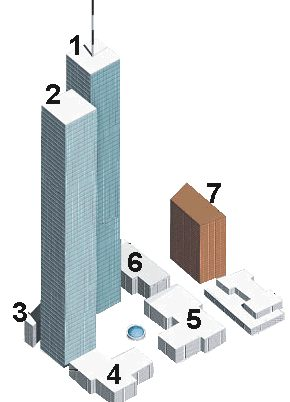
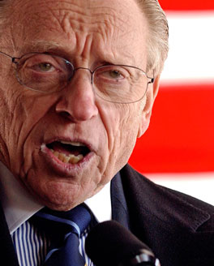
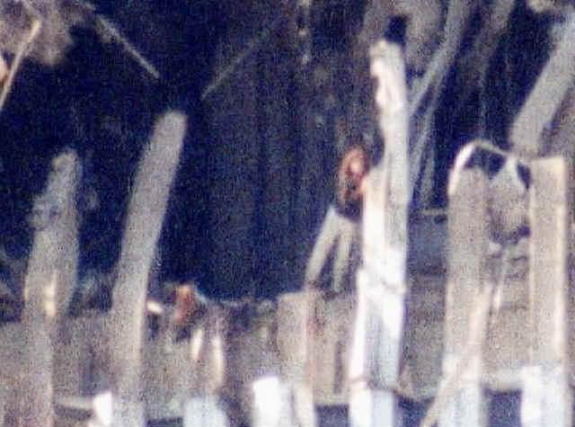
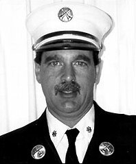
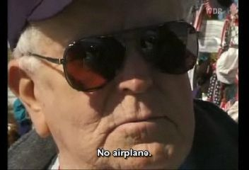
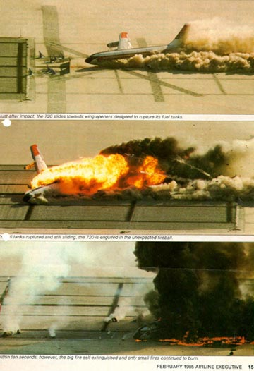
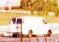
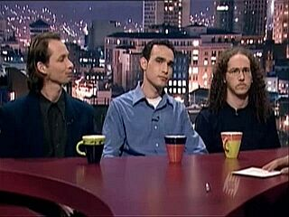
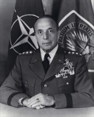

Takdim
Bu yazı 11 Eylül’ün gerçeğini ortaya dökmektedir. 7 yaşında bir çocuğun rahat anlayabileceği kadar basit ve açıktır.
11 Eylül tarihteki en büyük yalandır. Tarihte İslamiyet’e ve Müslümanlara atılmış en büyük iftiradır.
Bu yazı bir gazetede basılsın, sonra video da yapılabilir. Veya TV programı yapılabilir.
En sondaki, YouTube Sansürlüyor diye başlayan bölüm kısaltılabilir. Fakat maalesef YouTube sansür yaptığı için, ancak böyle bulunuyor YouTube içinde.
Harun Altay
h.altay@gmail.com
11 Eylül 2001 faciasının, İnsanlık tarihimizin en müessif olayı olduğunu biliyorsunuz. O sabahın dehşetli hadiselerini bütün dünya televizyondan ve gazetelerden duymuştu. Verilen habere göre, 19 Müslüman Arap terörist, 4 adet yolcu uçağını yolcuları ile birlikte kaçırmışlardı
Dünyaya gösterilen resimlerde iki kuleye uçaklar çarptıktan sonra, kısa bir müddet sonra tepeden başlayarak tabana kadar 10 saniye içinde gökdelenler toz bulutuna dönüşmüştü.
Burada çok ciddi ve aptalca uydurulmuş bir olay vardı. İkiz kulelerden başka kırk yedi katlı üçüncü bir bina daha vardı. Resimlerde gördüğünüz yedi nolu kule… Bu kule ne olmuştu peki…

resim: 7 nolu bina, 47 katlı

resim: Dünya Ticaret Merkezi 7 no’lu bina yıkılmadan önce görülüyor. Bu binanın sadece birkaç penceresinde alev var. Üstteki yangın da sönmüş.
2 uçak 110 katlı iki kuleye çarpıyor. Hiç bahsedilmeyen 47 katlı 7 no’lu kulenin akibeti çok ilginç…Zira kendisine uçak çarpmadığı halde yıkılıyor. Bu kulenin yıkılmadan önceki fotoğrafı yukarıda görülüyor. Sadece birkaç katının bazı odalarında yangın var. Aşağıdaki resimde ise 7 no’lu kulenin yıkılış anını göreceksiniz..

resim: DTM 7 nolu bina 10 saniye içinde çöküyor.

Zavallı BBC spikeri… Bina henüz yıkılmamışken önüne konulan yalanı bütün dünyaya duyuruyor. Burada, bina çökmeden 20 dakika önce, BBC’de çöktü diye haber veriliyor. Yukarıdaki resme bakın, spiker “Çöktü” diye haber verirken, sağ tarafta ok ile gösterilmiş 7 no’lu bina çökmemiş halde duruyor.

resim: Larry Silverstein
Bu kişi Dünya Ticaret Merkezinin kiraya verme hakkını 99 yıllığına almış kişidir. Bunu olaydan bir kaç ay evvel alıyor. Ve yüklü bir de sigorta yaptırıyor. Sigorta özellikle terör saldırılarını kapsıyor.
Bu kişinin olay günü akşama doğru çekilmiş videosu var. İlginç yalan ına şöyle kılıf hazırlamış. Diyor ki: "İtfaiye DTM 7 notu gökdelende yangını kontrol altına alamadıklarını, durduramadıklarını söyledi. Ben de “Yıkın” (pull it) dedim. Ve yıkıldı." ("pull it", kontrollü yıkımın binanın yıkılması tabiri imiş) Bu kırkyedi katlı devasa binayı, bir duvarı yıkmak gibi dünyaya anlatıyor, çok akıllı Silverstein..
Daha acaibi ise, Amerikan adaletinden tek bir kişi bu adamı yakalayıp da, "Sen ne diyorsun?" demedi. Onun yerine, "DTM7 kendi kendine yangından dolayı yıkıldı" görüşünü Amerika’nın resmî görüşü olarak kabul ettiler. Yani Amerikalılara kabul ettirdiler. Hakikatin sonradan bu şekilde ortaya çıkacağını hiç düşünmeden…

resim: Pankart tercüme: "Dünya Ticaret Merkezi 7 nolu bina kendi kendisini havaya uçurmadı"
Dünya Ticaret Merkezi kulelerinin Yıkılışına Gelince…
O günkü Amerika’yı idare edenler diyorlar ki:11 Eylül günü sabahı iki kuleye 2 uçak çarpıyor, kısa bir müddet sonra da bu 2 kule yıkılıyor.
Adeta gaipten gelir gibi çarpan uçağın pencereleri yok!
Birinci gün, naklen yayında Fox televizyonunun muhabiri, uçağın yan pencerelerinin olmadığını iki defa söylüyor ve Gördüğü şaşkınlıkla hiçbir havayolu şirketinin ticarî uçağına benzemediğini belirtiyor. Karşısındaki sunucu da, kargo uçağı olabileceğini söylüyor.
Uçaklar çarpmadan çok az evvel, füze fırlatma ateşi olabileceğini düşündüğümüz bir ateş çıkarıyorlar. Dört ayrı açıdan çekilmiş, dört ayrı videoda ikinci kule için bu durum görülüyor. Birinci kulenin elde bulunan tek videosunda da, yine bu durum gözlemlenebiliyor.
Yani 11 Eylül Senaristine göre binaları çökerten uçaklardır.
Peki bilim adamları bu yalana nasıl cevap veriyorlar?
Bu sahanın uzman adamları yangından dolayı, çelikten yapılmış olan bir binanın çökmeyeceğini söylüyorlar. Bunu bilmek için bilim adamı olmaya da gerek yok. Uçak yakıtının sıcaklığı, çeliği eritmeye yetmiyor. (www.ae911truth.org)
Uçaklar çarpmış ve yangınlar başlamış. Kulelerde açılan deliklerde yaşamakta olan insanların resimlerini aşağıda görüyorsunuz.
Yangın olan katlarda yaşayan insanların fotoğrafları

İkiz Kulelerdeki uçağın çarptığı yerde açılan deliklerde yaşayan insanlar var, fotoğraflarda görünüyor.
Güney Kule 78.nci Kat

resim: İtfaiye Şefi Orio Palmer
New York itfaiyesi o günkü radyo konuşmalarını 1-2 sene sonra yayınlıyor.İtfaiyeci şefi Orio Palmer itfaiye telsizinde şöyle konuşuyor:
"batarya 7, merdiven 17, 2 adet izole edilmiş yangın cebi var. Biz 2 sıra ile bu yangınları söndürebilmemiz lazım"
İşte 78. kat bu. 2 adet yangın cebi. Onu da söndürürüz diyor itfaiye şefi. Yani 78. katta cehennem gibi bir yangın yok, hepsi bu.
İkiz Kulelerden gelen patlama sesleri
Görgü şahidi itfaiyeciler, ve o gün o saatte orada bulunan normal vatandaşlar binalardan bomba patlama sesleri geldiğini söylüyorlar. Binalar yıkılırken çok şiddetli patlamalar oluyor. Bu patlama seslerini siz de videolarda rahatlıkla duyabilirsiniz.
İlk günü binalarda ölen itfaiyecilerin ses kayıtlarında da çok patlama haberi geçiyor.
Binalar serbest düşme hızında yıkılıyorlar.
110 katlı bina, yaklaşık 8 saniyede yerle bir oluyor. 110 katlı bir binanın tepesinden aşağıya bir taş atılsa, bu taş da yaklaşık 8 saniyede yere düşeceği söyleniyor. Fizikteki serbest düşme hızındaki bir yıkımın, ancak patlayıcılar ile kontrollü ve planlı yıkım ile mümkün olabileceği ifade ediliyor.
Frank DeMartini: Bu binalar birden fazla uçak çarpmasına dayanır

resim: Frank DeMartini, DTM inşaat müdürü
11 Eylül 2001’den 8 ay kadar evvel, Dünya Ticaret Merkezinin inşaat müdürü, Frank DeMartini bir video mülâkatı vermiş. Videosunda şunları söylüyor: “İkiz kuleler bir Boeing 707 yolcu uçağı çarpacak ve bir şey olmayacak şekilde tasarlanmış. Boeing 707 o zamanın en büyük yolcu uçağı. İnanıyorum ki, bu binalar değil bir uçak, birden fazla yolcu uçağının çarpmasına da dayanabilir.”
Frank DeMartini’nin bürosu 88’inci kattaymış. 11 Eylül’den sonra gören olmamış. Demek ki, o da binalardaki diğer 3 bin civarında kişi ile beraber toza dönüşmüş.
Pentagona çarptığı söylenen uçak nerede?

resim: 5 metre çapındaki delikten koca uçak nasıl girip kayboldu?
11 Eylül 2001 sabahını yaşayıp da günün haberlerini taakip edenler hatırlıyorlardır. BOP çerçevesinde İslâm ülkelerini ve sonra da Ukrayna’yı kevgire çeviren tahribatçı küresel gücün güdümünün merkezi Pentagon’a da bir uçak düştüğü iddia edilmişti. ABD’nin resmi tezleri hala o yalanı geveleyip duruyorlar. Maskara oldukları çevrelere cevap da veremiyorlar.
Bir Boeing 757 boş iken 60 ton gelirmiş. 60 tonluk enkaz nereye gitti diye soruluyor. Ortada enkaz yok! Uçağın kanatları, kuyruğu, motorları, gövdesi, yolcuların cesetleri ortada yok. Topu topu 5 metre çapında bir delik var. Güvenlik kameralarının çektiği videolar ise basına verilmiyor. FBI etraftaki bir benzinliğin o tarafa dönük kamerasına da el koymuş.
Peki 60 tonluk bu uçak nereye kayboldu?
Amerika'nın resmî cevabı: Yangın o kadar şiddetliydi ki, uçak buharlaştı. Böyle akıl dışı bir cevap inanılacak gibi değil... Aklı başında birisi böyle bir açıklama yapabilir mi? (Kaynak: Loose Change videosu)
Shanksville’de düştüğü söylenen uçak da ortada yok!

resim: Uçak düştü denilen 3 metre eninde, 5 metre boyunda çukur. Ortada bir uçak yok!
Shanksville belediye başkanı Ernie Stull, Mart 2003 de Alman televizyonuna verdiği beyanatta ‘Düşen bir yolcu uçağı yok!’ diyor. Fotoğraflarda sadece 3 metre eninde, 6 metre boyunda bir çukur var, o kadar. Yukarıdaki resimde görünüyor.

resim: Shanksville belediye başkanı Ernie Stull, "Uçak yok!" diyor.
Shanksville belediye başkanı yalnız değil, ilk günde yapılan başka video roportajlarında da insanlar sadece bu boyda bir çukur olduğunu, ortada bir uçak parçası, kanat, motor, gövde, cesetler olmadığını söylüyorlar.
Uzaktan kumandalı, insansız uçak teknolojisi eskiden beri var:

resim: Uzaktan kumandalı yolcu uçağı test çarpması yapıyor.

resim: Test çarpması yapan yolcu uçağının içindeki insan maketleri.
Uzaktan kumandalı teknoloji ile çarpma testi yapılan uçağın içi.
1 Aralık 1984’de, bir Boeing 720 yolcu uçağı uzaktan kumanda ile kaldırılıp, belirlenen yere uçurularak, çarpma testi yaptırılıyor. Yani, yolcu uçaklarını insansız uçurabilecek teknoloji en azından 1984’den beri var.
İşte Zurnanın zart dediği bir başka yer…
Sözüm ona 19 Arap Terörist!

Yukarıdaki hava korsanı olduğu söylenen 19 kişiden, resimleri öne çıkarılan en az 9 kişisi yaşıyor, 11 Eylülden hemen sonra. Yaşıyorlar, çalışıyorlar. Loose Change videosunda tek tek sayılıyor.
Waleed al-Shehri - Kazablanka Fas'da yaşıyor, sağ.
Abdulaziz al-Omari - Suudi Telekom'da mühendis olarak çalışıyor, sağ.
devamı var... videosunda.
Dans Eden 5 Arap (Pardon israilli)

resim: dans eden israillilerin beyaz karavanı
5 adet İsrailli, üzerlerinde Arap kıyafeti olarak, dans ediyorlar. Polisin raporuna göre kutlama yapıyorlar, aşağı yukarı zıplıyorlar.
Olayı gören polis bu dans eden israillileri gözaltına alıyor. Bu 5 kişi Arap değil, israilli, bir kısmı da eski israil ordu mensubu çıkıyor.
İçlerinde Mossad ajanı da olan bu danseden israilliler sonradan serbest bırakılıyor.
Bu şekilde gözaltına alınan israilli genç sayısı 60 olarak bildiriliyor.
Bir kaç ay sonraki bir haberde bu sayı 200 olarak veriliyor. İçlerinde bir kısmı israil askeri istihbarat mensubu olduğu bildiriliyor.
Bu israilliler uçaklar çarpmadan evvel kulelerin videosunu çekiyorlar. Dikkat edelim, daha uçaklar çarpmadan videolarını çekiyorlar. Uçaklar çarptıktan sonra da, çöktükten sonra da duman çıkan kulelerin bölgesinin videosunu çekiyorlar.
Bu yakalanan genç israillilerin hepsi de sorgulanmadan israile geri gönderilmiş.

resim: Bu, Arap kıyafeti ile dans eden 5 israilli, israile döndükleri zaman televizyon programına çıkıyorlar. Programda, "Maksadımız olayı dökümante etmekti" diyorlar.
daha fazla bilgi için:
www.hugequestions.com/Eric/TFC/Zion-Summary.html
killtown.blogspot.com/2005/11/dancing-israelis-on-911.html
Northwood planı nedir?

Komplocu General Lyman Lemnitzer
Northwood Operasyon planı, 1962 yılında, Amerikan “genelkurmay başkanı” olan Lyman Lemnitzer tarafından yapılmış bir plandı. Bu plana göre, CIA Amerikan sivil halkına ve Amerikan askerî hedeflerine karşı terörist saldırılar yapacak, suç Küba’nın üzerine atılacak ve bu şekilde Küba’ya savaş açabilmek için gerekli bahane bulunacaktı. Bu plan teklifi Savunma Bakanı tarafından reddediliyor, Kennedy de bu generali görevden alıyor.
Eski İtalyan devlet başkanı Francesco Cossiga:

resim: Eski İtalyan devlet başkanı Francesco Cossiga
Cossiga: “11 Eylül’ü CIA ve Mossad yaptı”
İtalyan eski başkanı Cossiga, 30 Ekim 2007 tarihinde, İtalya’nın en eski ve en çok okunan gazetelerinden “Corriere della Sera” gazetesine verdiği beyanatta şöyle söylüyor:
“Dünyanın her gizli servisi iyi bilir ki, 11 Eylül işi CIA ve Mossad’ın işidir, siyonistlerin yardımıyla yapmışlardır. Maksatları Arapları dünyanın gözünde küçük düşürmek ve Irak ile Afganistan işgalini mümkün kılmaktır.”
11 Eylül Gerçeği toplulukları, videolar, kaynaklar
Bu yazıda bahsedilen konularla ilgili Google’de, “911 truth” yazarak kendi araştırmanıza da başlayabilirsiniz. Çok sayıda web sayfası, video ve grup var. 11 Eylül’ün televizyonlarda, gazetelerde söylendiği gibi olmadığını iddia eden, açıklayan çok grup mevcut. İngilizce olarak, youtube’de olan şu videolara bir başlangıç olabilir:
“911 Loose Change - Dylan Avery”
“911 in Plane Site - Dave VonKleist”
"911 Ripple Effect - Dave VonKleist"
Ayrıca, “Architect and Engineers for 911 Truth” diye ararsanız, bu topluluğun internet sayfasından da videolara, dokümanlara ulaşabilirsiniz. Burada ve bunun gibi başka sitelerde, mimarlar, inşaat mühendisleri, profesörler iki kulenin yangında çökmediğini, içerisine daha önceden yerleştirilmiş patlayıcılar ile yıkıldığını ve bunun delillerini açıklıyorlar.
YouTube sansürlüyor!
YouTube'de şöyle arayın: "911 Ripple Effect". Sayfalarca gidiyorsunu, aradığınız videoyu göstermiyor. Şimdi Google'de şöyle arayın: "911 Ripple Effect". Hemen üçüncü sırada YouTube'deki videoyu Google gösterdi.
www.youtube.com/watch?v=KQS44pAUTQQ
www.youtube.com/watch?v=Y9o7n2nugmc
911 in Plane Sight
www.youtube.com/watch?v=cYPSxZc0BPU
Loose Change videosunu da bu yolla buldum. Önce YouTube'de aradım: "Loose Change 911 2009", YouTube'de bulamadım. Sonra Google'de aradım: "Loose Change 911 2009". Buldum. Yani YouTube'deki videoyu Google buldu.
www.youtube.com/watch?v=ipcQBQ2P3l4
www.youtube.com/watch?v=TjYQP0ly-lw
www.youtube.com/watch?v=ipcQBQ2P3l4
Yani YouTube açık bir şekilde sansür yapıyor, 11 Eylül'ün gerçeğini anlatan videoları aramada buldurmuyor.
Not: Google ile YouTube'nin sahipleri aynı.
Painful Deceptions (2005) by Eric Hufschmid
www.youtube.com/watch?v=2V5bIJOMT4w
Faydalı adresler
HARUN ALTAY
h.altay [@] gmail.com